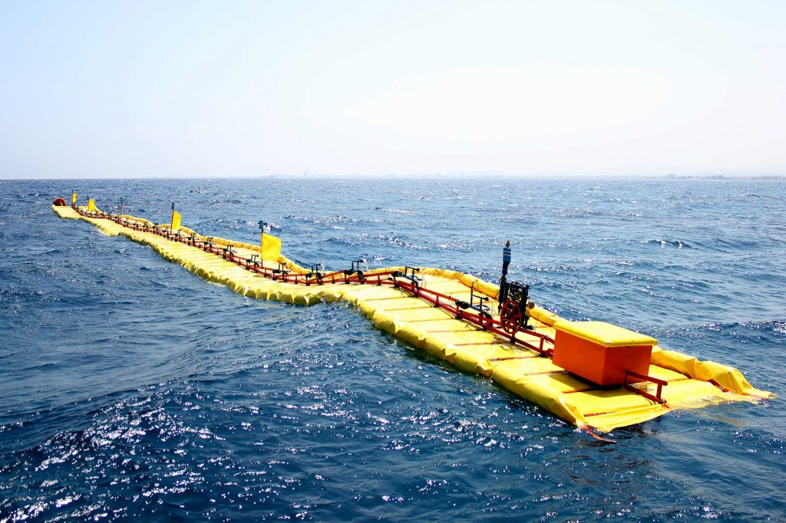

Research
NWEL has been working behind the scenes but is now ready to show it to the world. The first Waveline Magnet device was conceived in 206 and since then, various iterations have been developed for different scopes, with each new model building on the knowledge learnt from its predecessor.
The company’s easy access to offshore facilities in Rio de Janeiro has made it possible to also trial each Waveline Magnet model in the sea at Búzios which has helped ‘fast-track’ the research and development process.
Your first prototype being tested in the open sea in 2012
The result of over ten years of comprehensive and dedicated R&D has led to the ground breaking Wave Line Magnet (WLM)
The Waveline Magnet answers all the problems currently being faced by wave energy converters ensuring efficient, economical and long lasting clean power production.